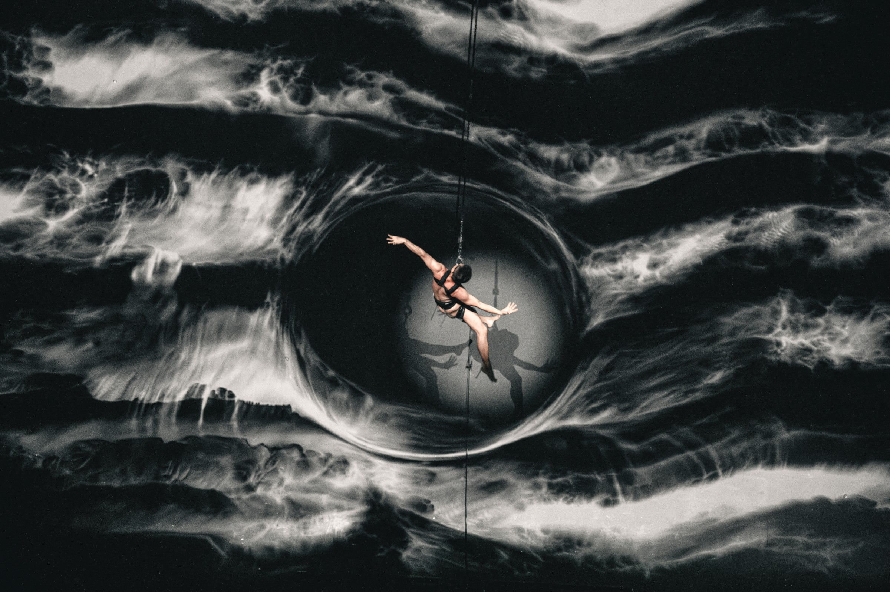
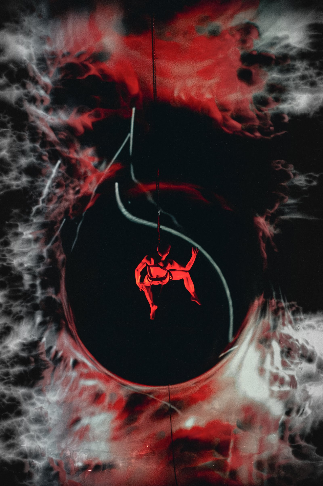
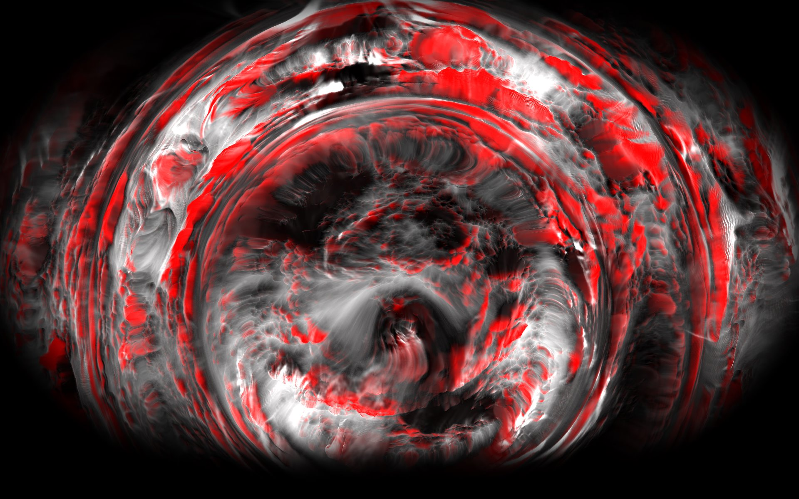
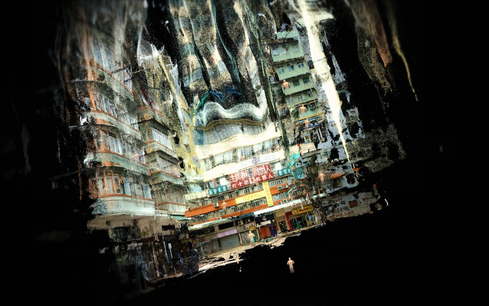
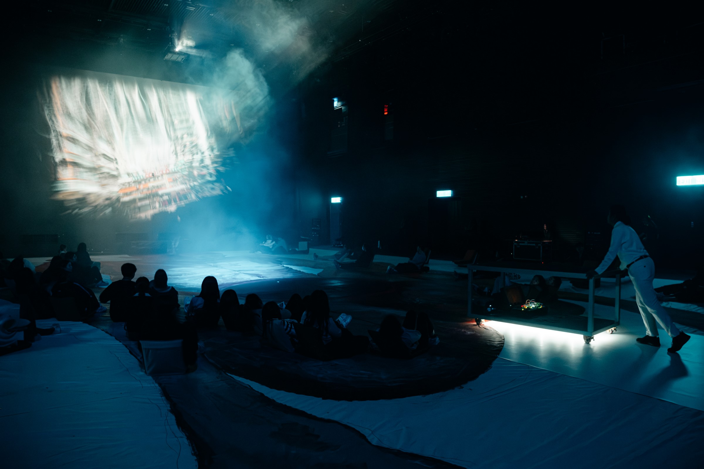
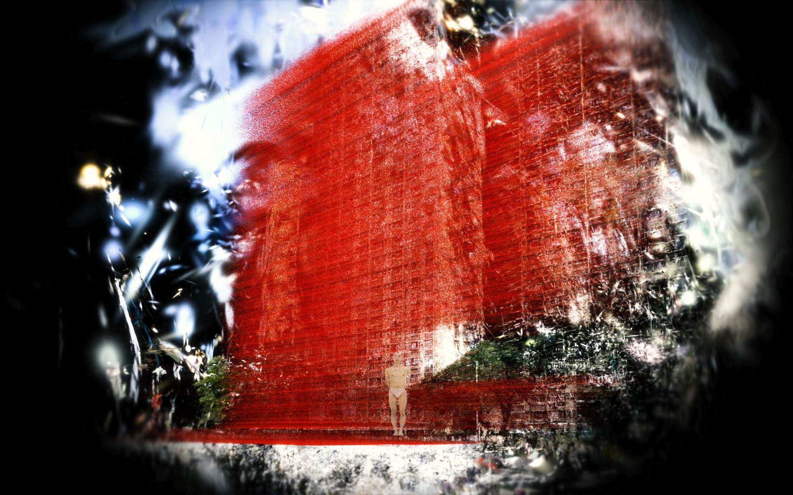
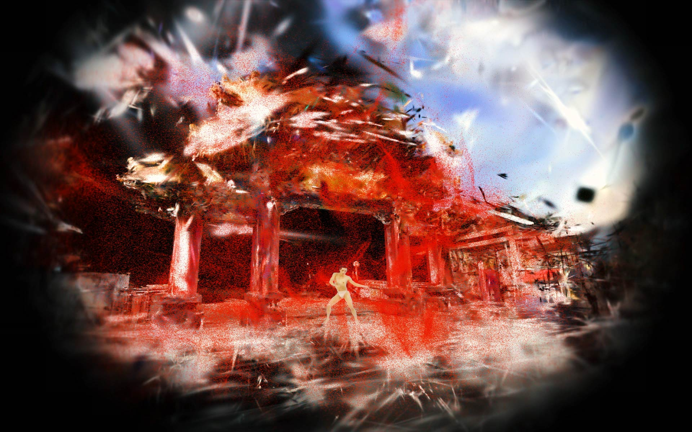
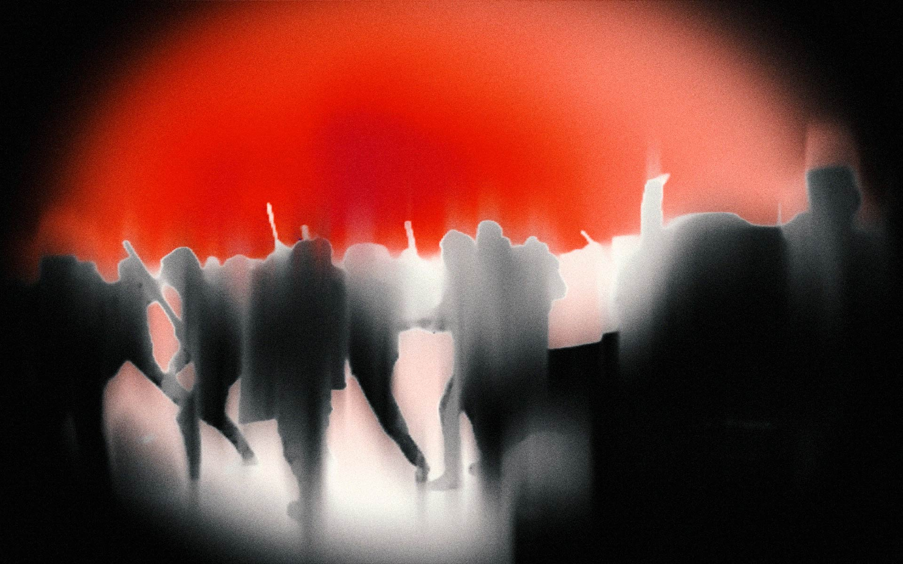
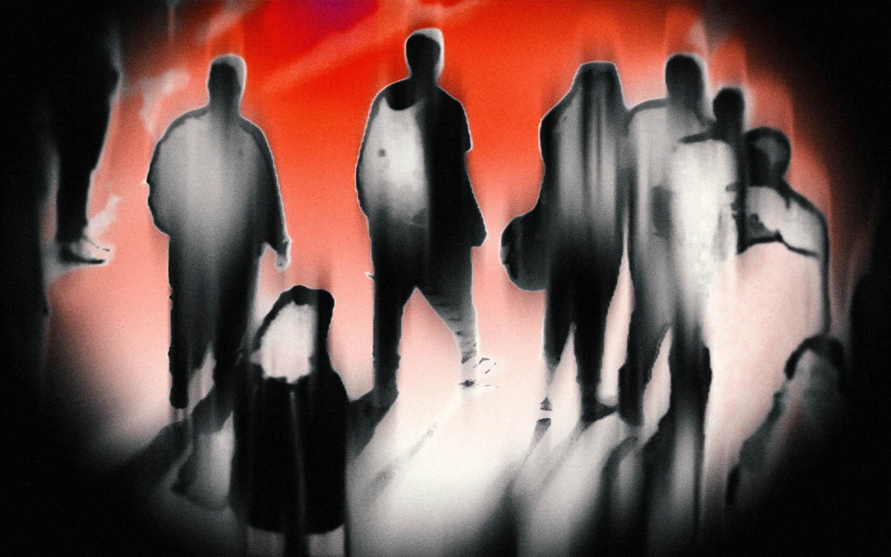

NOV. 21–24 2024: Presented at Freespace Dance 2024, Freespace WestK, Hong Kong


Daniel Yeung uses site-specific creations and new media art to showcase the possibilities of the body and movement. Performed in 1999 and 2011, the Dance / Dan's Exhibitionist series received wide acclaim for its inventiveness in Hong Kong and overseas.
This new work commissioned by WestK Freespace taps into the versatility of The Box by unearthing its hidden spaces and new spatial possibilities, exploring what freedom means in this specific time and space. The audience reclines on the floor, viewing the theatre from a new angle and experiencing The Box, watching the performer soar in the air.



3D Gaussian Splatting and PointCloud of Hong Kong


3D Gaussian Splatting and PointCloud of Hong Kong


Real-time image depth computing
Artistic Director and Performer: Daniel Yeung
Cross-media devising artist
Drawing: Hoi Chiu
Lighting: SunFool Lau Ming-hang
Visuals: HUANG WEI
Sounds: CHUANG SHENG-KAI
Producers: Felix Chan, Joyce Kwok